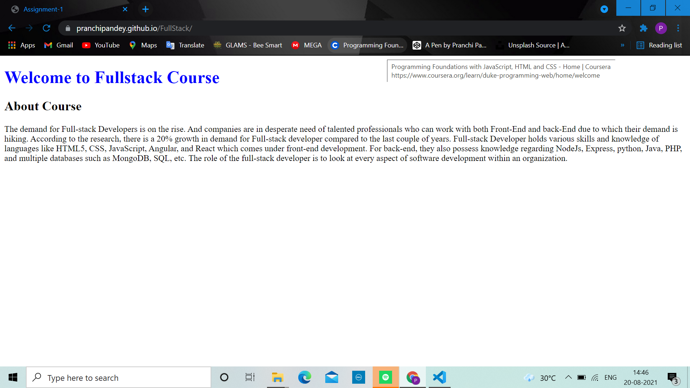

Practical-1: Create a Web page including HTML basic skeleton using Offline
HTML Editor and Online Sandbox Environment
Welcome to Fullstack Course
About Course
The demand for Full-stack Developers is on the rise. And companies are in
desperate need of talented professionals who can work with both Front-End
and back-End due to which their demand is hiking. According to the
research, there is a 20% growth in demand for Full-stack developer
compared to the last couple of years. Full-stack Developer holds various
skills and knowledge of languages like HTML5, CSS, JavaScript, Angular,
and React which comes under front-end development. For back-end, they also
possess knowledge regarding NodeJs, Express, python, Java, PHP, and
multiple databases such as MongoDB, SQL, etc. The role of the full-stack
developer is to look at every aspect of software development within an
organization.
Output
Live page on Github
